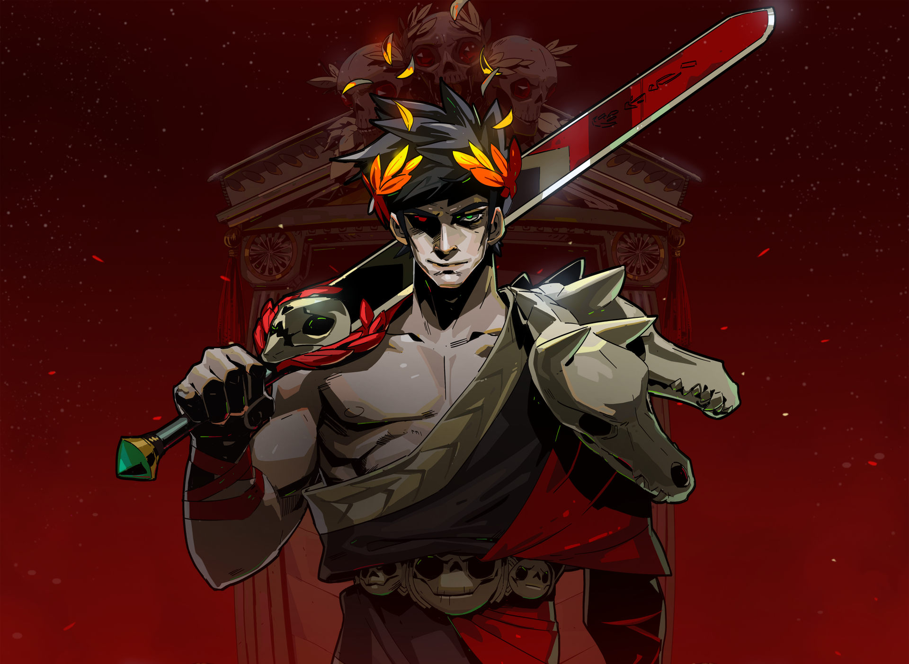
Milo Serusier
Ancien élève du lycée Ronsard à Vendôme, j’ai suivi une seconde générale suivie d'une première et terminale STI2D, option SIN. Durant ces deux années, j’ai participé à plusieurs projets en groupe, au cours desquels j’ai assuré la modélisation, la conception et le développement informatique tout en respectant un cahier des charges matérialisé en SysML, notamment à travers la conception de pièces techniques en 3D via SolidWorks ainsi que la création d’applications B4A et de programmes Arduino.
J’ai effectué un stage au pôle communication de la SNCF lors de ma seconde, où j’ai contribué à la création de contenus pour les réseaux sociaux, notamment des publications Twitter lors de la course Paris-Versailles 2024, sponsorisé par l’entreprise. J’ai aussi réalisé une vidéo de félicitations destinée aux équipes mobilisées lors d'un forum pour la préparation des équipes aux Jeux Olympiques.
En parallèle, je pratique la musique assistée par ordinateur depuis trois ans sur Ableton via une école de musique. Je réalise aussi des logos et identités visuelles avec GIMP et Inkscape dans un cadre personnel et créatif, et je mène des projets de développement personnel, comme récemment avec la création d’un bot Discord en Python. Je travaille également actuellement sur un jeu vidéo sous Unity, en collaboration avec plusieurs amis.
Mes compétences logicielles
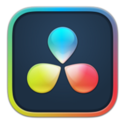
Montage vidéo et étalonnage. Je n’ai pas encore beaucoup exploré les outils d’effets spéciaux.
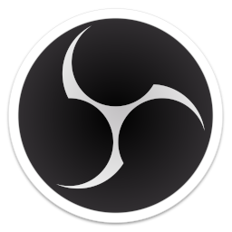
Organisation des périphériques et création de scènes pour l’enregistrement et la diffusion de contenu.
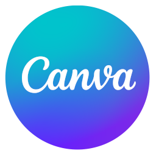
Création de supports de présentation ou de diaporamas structurés et visuels à plusieurs.
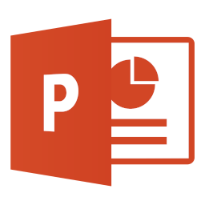
Création de supports de présentation ou de diaporamas structurés et visuels.
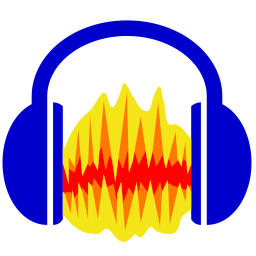
Analyse de spectre de fréquences, traitement audio et mixage multipiste.
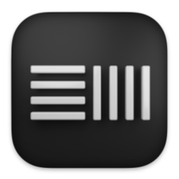
Production musicale, préparation d’un set live à jouer sur scène, composition et mixage.
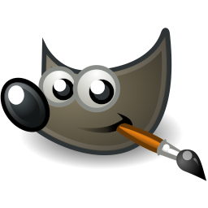
Retouche photo, détourage, suppression d’éléments et prototypage graphique avant vectorisation.
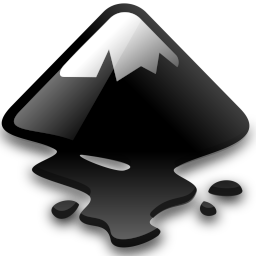
Création de logos et d’identités visuelles.
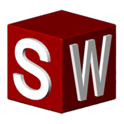
Modélisation 3D de pièces techniques simples.
Organisation de données et calculs simples.
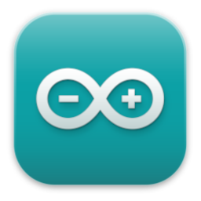
Programmation de cartes Arduino et utilisation de nombreux capteurs, moteurs et modules Internet.
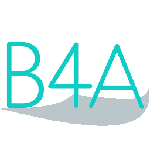
Création d’interfaces homme-machine capables de piloter des systèmes Arduino, et développement d’applications pouvant envoyer et recevoir des données via Wi-Fi.
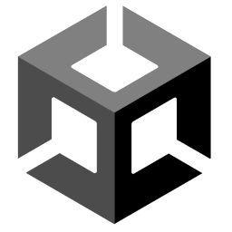
Création d’environnements 2D, exploitation d’un moteur physique et mise en œuvre d’un jeu en C#.
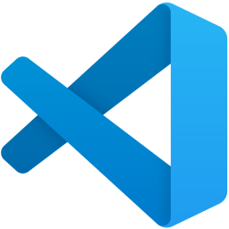
Développer dans un environnement organisé.
Mes réalisations

loggoooo
Vidéo DaVinci Stagee
Musique Ableton